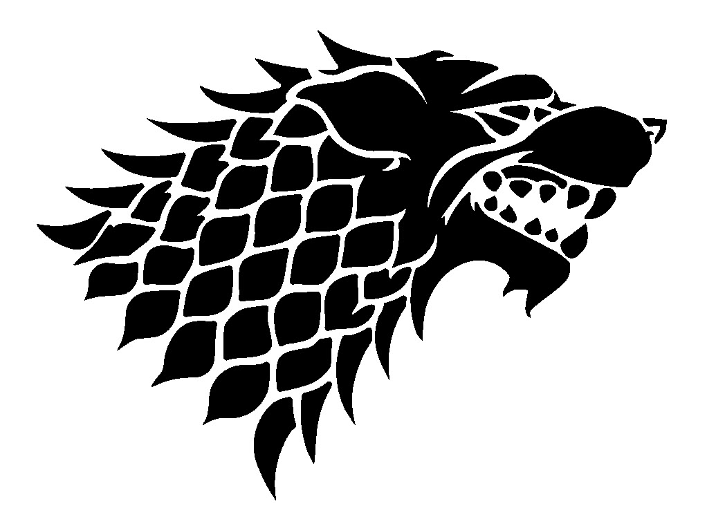

House Stark
"Winter is coming"
House Stark of Winterfell is a Great House of Westeros, ruling over the vast region known as the North from
their seat in Winterfell. It is one of the oldest lines of Westerosi nobility by far, claiming a line of
descent stretching back over eight thousand years. Before the Targaryen conquest, as well as during the War
of the Five Kings and Daenerys Targaryen's invasion of Westeros, the leaders of House Stark ruled over the
region as the Kings in the North.